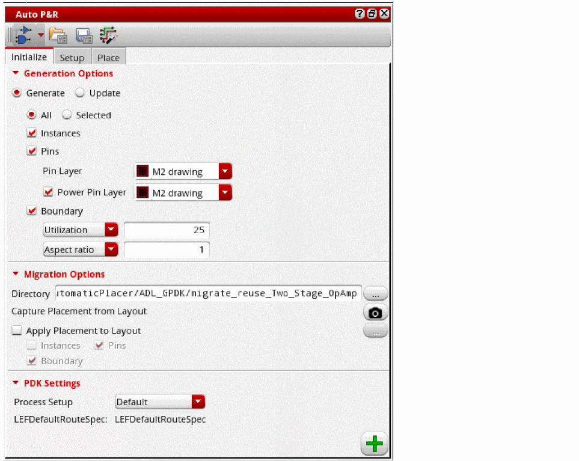

2
Initializing a Layout in the Auto P&R Standard Cell Flow
To initialize a layout view in the Auto P&R standard cell flow:
- Open the Initialize tab of the Auto P&R assistant.
-
Select Generate to generate new objects in the layout canvas or Update to update the existing objects.
 - Set the scope of layout generation to either All or Selected.
- Select Instances to generate all instances from the source schematic.
- Select Pins to generate pins during initialization.
- Select Power Pin Layer to generate power pins.
- Select an LPP from the Pin layer list that contains the standard cell pins to be generated. The default value is the first metal layer in the layer stack.
- Select a layer from the Power pin layer list that contains the power and ground pins to be generated during initialization.
- Select Boundary to generate a PR boundary as per the specified combination of Utilization and Aspect Ratio or Width and Height.
- In Layout MXL, the Migration Options section is available, which lets you run the assisted flow of the Virtuoso® Custom Design Migration solution. For more information, see Setting Options for Custom Layout Design Migration.
-
In the PDK Settings section, select a process node from the Process Setup drop-down list.
The process setup name is displayed below and the settings for the selected process node are loaded in the form. There is a direct mapping of this Process Setup in the Virtuoso Digital Implementation (VDI) GUI. The specified process setup triggers different placement and routing strategies that are built into Innovus. - Click Generate to generate the selected objects in the layout canvas.
Instances and pins are generated below the PR boundary.
Related Topics
Auto P&R Assistant User Interface for Standard Cell
Setting Up a Design in the Auto P&R Standard Cell Flow
Placing Standard Cells Automatically
Return to top